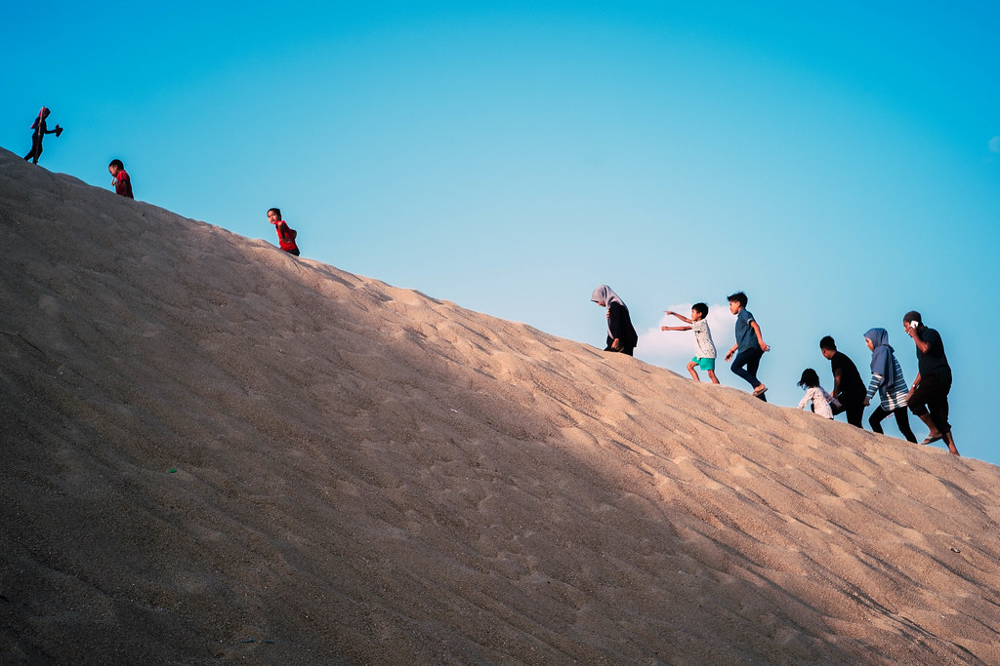
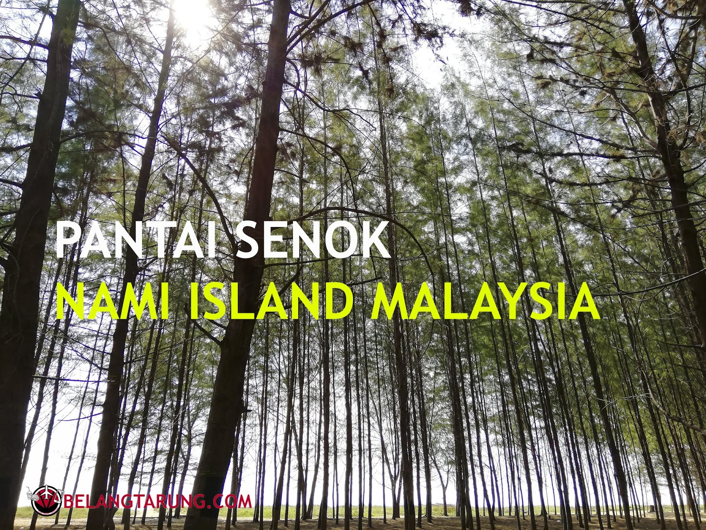
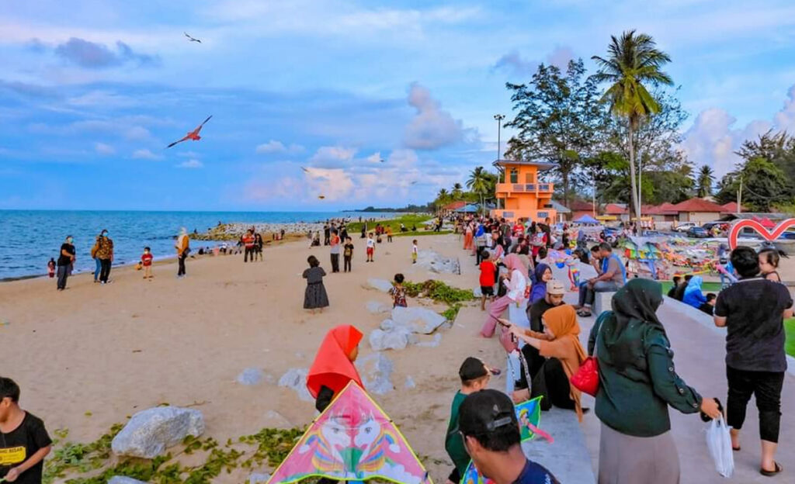

D'AUR BEACH RESORT
This is one of the clean and beautiful beaches in Kelantan. The entrance fee is only RM5 for a car and it is very suitable for those who want to relax, selfie, held a family day, celebrate birthday and so on.
Pantai Bisikan Bayu
Pantai Bisikan Bayu, or the Beach of Whispering Breeze, is a pleasant beach fringed with casuarinas trees and coconut palms. It is located between the villages of Kampung Tok Bali and Kampung Semerak on a stretch of Kelantan coastline just before the border with Terengganu. The beach is also known as Pantai Dalam Rhu.
Pantai Nusuk
The private land, estimated at 20 hectares, was previously known as Tanjung Kuala Sabak, but was rebranded in 2021 with the name 'Pantai Nusuk' which means hidden or hidden beach. This beach has clean white sand and terrain such as a sloping beach area suitable for bathing activities.

Pantai Mekmas
Mek Mas Beach In Kelantan A Very Awesome Interesting Place For A Picnic. This is actually one of the most beautiful beach places in our country. However, there are so many Malaysians who have never visited Mek Mas Beach in Kelantan. Therefore do not miss the opportunity if you travel to this state then I highly recommend you to go visit here to see or feel for yourself a different experience at Mek Mas Beach in Kelantan.

Pantai Senok
Pantai Senok in Bachok, Kelantan is a popular spot among locals. It's well-known for its scenic, with pine trees-lined paths by the seaside. Forestry Department and some relevant parties planted the trees few years back and the trees are all grown matured and tall now. Some people called this Pantai Senok as Malaysia's version "Nami Island" which is located in Korea.

Pantai Cahaya Bulan
Pantai Cahaya Bulan is one of the famous beaches in the state of Kelantan, Malaysia. It is located about 10 km from Kota Bharu and was the landing area of the Japanese army to attack the British on December 8, 1941. At one time, this beach was called Pantai Cinta Berahi, a name said to have been given by a British soldier when he was on this beach on during World War II. At the time, the soldier was suffering because his love was unrequited. Some locals still use this old name today, though they prefer to refer to this beach as PCB.This coastline is 1.2 kilometers long. This beach is famous for its long and wide area, with beautiful sand and clear water. Rows of ru and coconut trees add to the beauty of this beach. As such, Moonlight Beach has become a popular picnic spot among local families, especially on weekends. The beach is complete with facilities for visitors, there is a choice of hotels, chalets, camping areas, eateries and stalls, and public toilets.